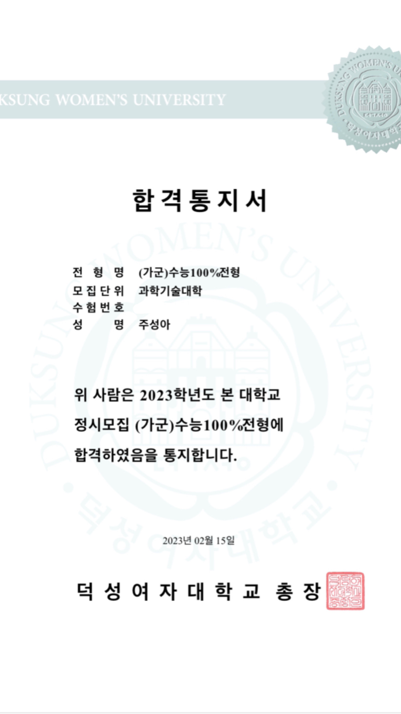
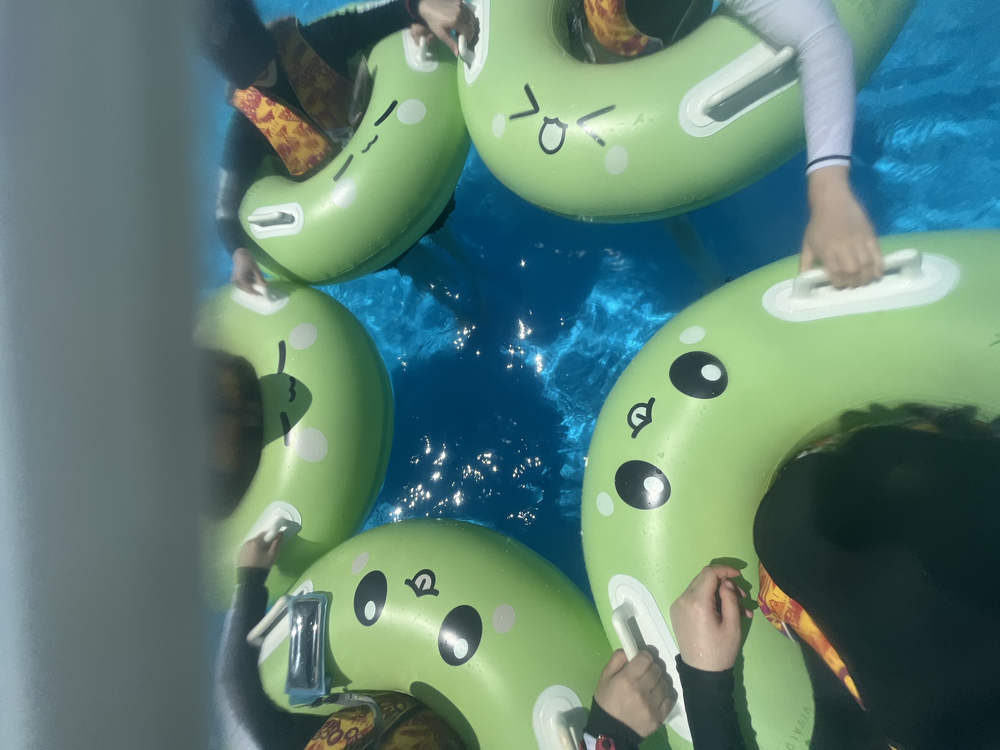
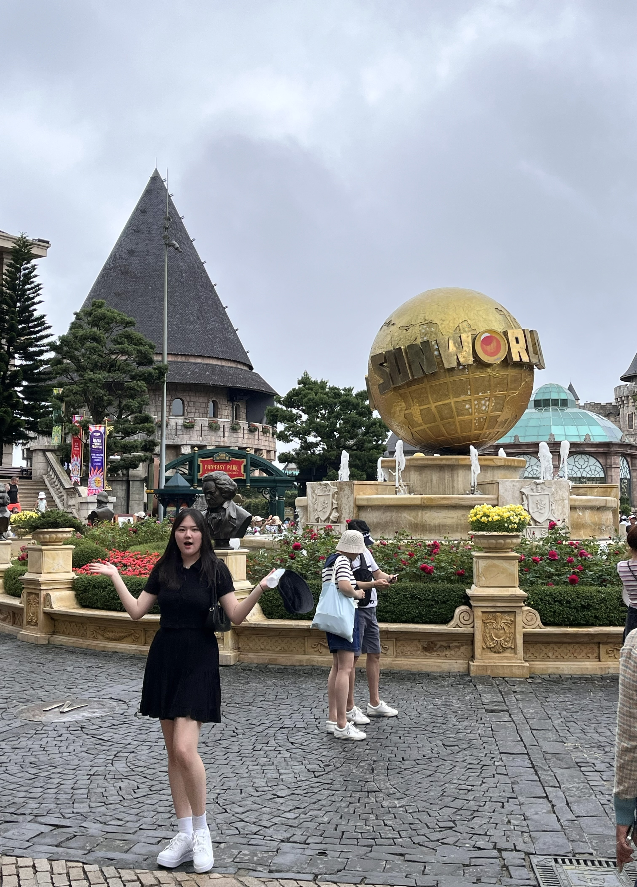
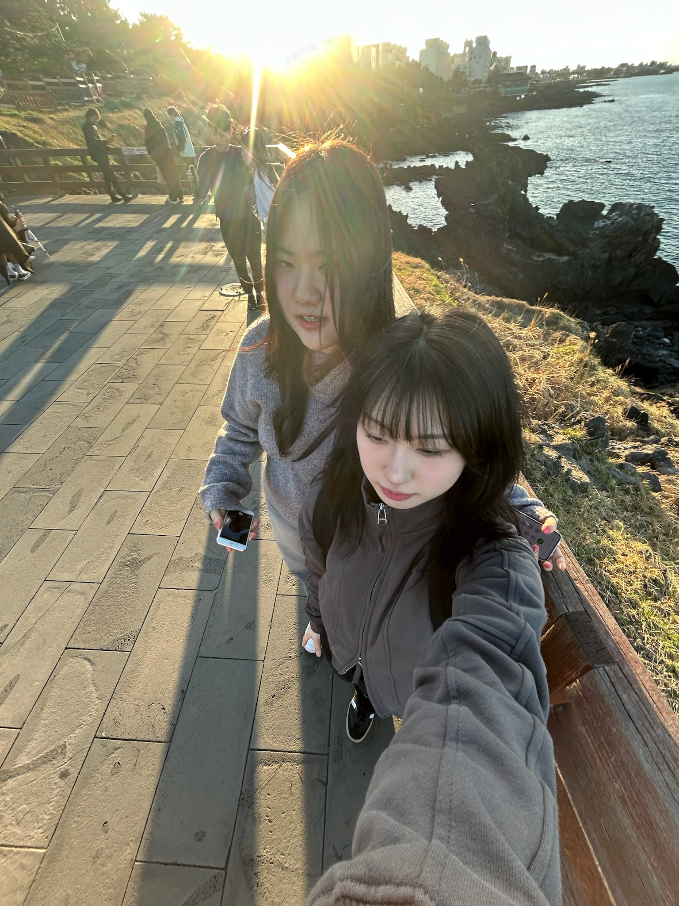
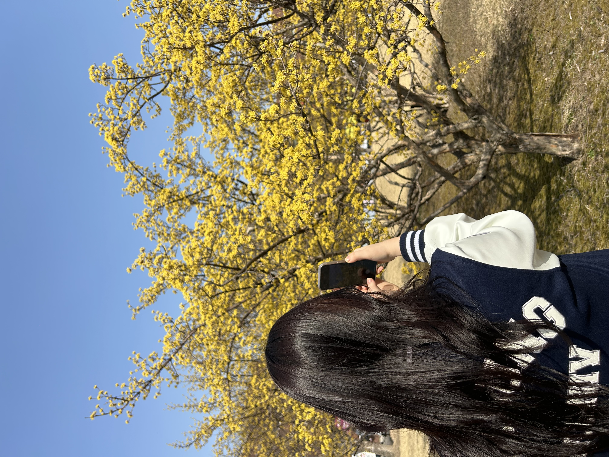
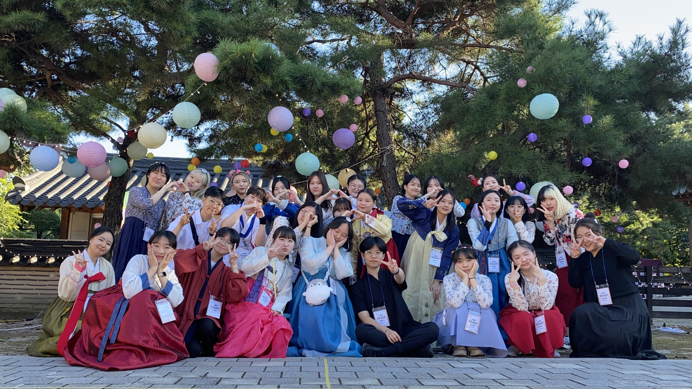
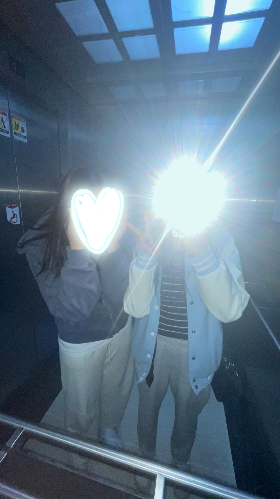

덕성여대
합격통지서
고등학교 친구들과 함께 다녀온 오션월드
가족과 함께 다녀온 베트남
여행
대학 동기와 다녀온 제주도
여행
2024 봄에 학교에서 꽃 구경하는 모습
그렇게 나는 대학생이 되었다. 중/고등학교 때보다 자유로워진 나는 고등학교 친구들과 함꼐 1박 2일로 오션월드에 다녀오고, 수험생활 동안 하지 못한 해외여행도 가족과 함께 가곤
했다.
대학교에서 친해진 동기와 제주도 여행도 다녀왔다. 여름방학에 다녀온 과학기술대학 mt에서 친해진 동기여서 친해진 지 얼마 되지 않은 상태였지만, 신기할 정도로 나와
비슷한 점이 많고 통하는 부분이 많은 친구라 정말 재미있게 다녀왔다.
그리고 학교 안에서는 대학생이 되면 꼭 입어보고 싶었던 학잠을 입고 학교에 만개한 꽃을 구경하는 등 활발하게 대학생의 삶을 즐기고 있다.


2023
한복파티
시험기간마다 밤늦게까지 학교에서 함께 공부하는 동기와
학교 생활도 활발하게 하고 있는데, 우선 1학년 1학기에 동아리에 들어갔다. 한복파티를 기획하고 주최하는 동아리인 '꽃신을 신고'에 들어가서 1학년 때는 홍보부 차장의 직위를
맡았다.
현재는 홍보부 부장으로 열심히 활동 중에 있다. 홍보부는 다양한 기업과 컨택해 한복파티에서 참가자들에게 배부할 협찬품을 받고, 학교 주변 상권과의 협상을 통해
쿠폰을 협찬 받는 업무를 한다. 그리고 한복파티 등 다양한 한복과 관련된 것들을 홍보하는 카드뉴스를 만들어 인스타그램이나 네이버 블로그, 그리고 에브리타임에
업로드를 한다. 올해 부장의 직위를 맡게 되면서 할 일이 너무 많아져 힘들긴 하지만, 그래도 열심히 활동 중이다.
공부도 열심히 하고 있다. 1학년 2학기에는 성적우수장학금도 탔다. 고등학교 때보다 열심히 공부한 것 같다. 전공 선택이 달린 문제라 그런 것도 있겠지만,
전공탐색과목이었던 '프로그래밍개론'수업과 '미디어개론'수업에서
좋은 성적을 받고 싶었다. 중학교, 고등학교 때 하던 공부와는 다른 성격의 과목이어서 내 흥미를 자극했던 것 같다. 그리고 문과 출신임에도 코딩을 잘 할 수 있다는 것을 스스로
증명해보이고 싶기도 했다.
그렇게 열심히 했더니 좋은 결과를 이루어 낼 수 있었다.